[1] 4Introducción al análisis de datos con R
Curso dirigido a Ciencias Sociales y Humanidades
Bastián Olea Herrera
Inicio
Bastián Olea Herrera
Encuentra todo sobre el curso en este post de mi blog.
Puedes encontrar más contenidos para aprender R en este sitio, y más cosas de R en mi sitio web.
¿Qué es R?
R es un lenguaje de programación enfocado al análisis de datos, las estadísticas y la visualización de datos.
¿Para qué sirve?
- Lógica distinta: instrucciones en vez de acciones ⚙️
- Repetir, mejorar, adaptar y reutilizar lo que ya has hecho ♻️
- Automatizar tareas repetitivas 🤖
- Expandir tus resultados 🚀
¿Por qué usar R?
Gratuito
R es un lenguaje de programación abierto y gratuito, y es parte de la comunidad del software libre, así que nunca tendrás que pagar nada!
Amigable
R fue creado para personas de distintas disciplinas, y al centrarse en los datos resulta más intuitivo que otros lenguajes.
Reproducible
La gracia de R es guardar todos los pasos de tu análisis, lo que facilita corregirlos, reutilizarlos para nuevos casos, y compartirlo con otros.
¿Qué se puede hacer con R?
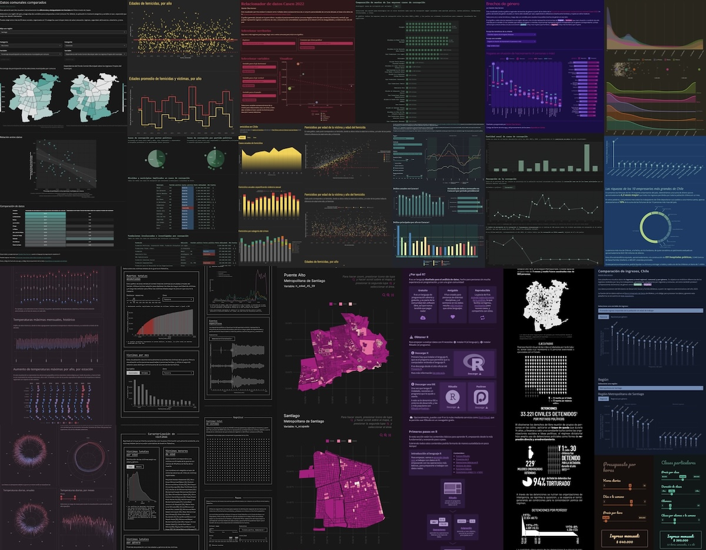
Muestra de algunas aplicaciones, gráficos, tablas, y mapas hechos con R. También algunos trabajos que he hecho.
Diferencia entre hacer y programar
- Aprender a programar es un cambio de perspectiva: pasamos de hacer cosas a planificar cosas 💅🏼
- Acción 🔧 → instrucción 🧠
- Trabajamos desde arriba, viendo todos sus pasos y componentes 👩🏻💻
- Pasos independientes, reutilizables, mejorables, intercambiables ⚙️
- El trabajo que hagas puede servirte a futuro, a ti y a otrxs ♻️
- Resultados replicables 🏭
Veamos algunos casos!
Caso 1: arreglar un problema
Datos → A → B → C → Resultado
Hacer
- Hago A
- Hago B
- Hago C
- Me equivoqué en B 😣
- Vuelvo a A 🙄
- Hago B
- Hago C
Programar
- Haga A
- Haga B
- Haga C
- Me equivoqué en B 🤨
- Cambio B 😌
- Re-ejecuto A, B y C
Caso 2: actualización de datos
Datos → A → B → C → Resultado
Hacer
- Actualizar datos
- Hago de nuevo A
- Hago de nuevo B
- Hago de nuevo C
Programar
- Actualizar datos
- Re-ejecuto A, B y C
Caso 3: optimizar procesamiento o cambio en metodología
Datos → A → B → C → Resultado
Hacer
- Cambio en procesamiento/metodología
- Tengo A
- Hago de nuevo B
- Hago de nuevo C
Programar
- Cambio en procesamiento/metodología
- Ajusto A si es conveniente
- Aplico cambios en B
- Re-ejecuto A, B y C
Caso 4: replicar un resultado
Datos → A → B → C → Resultado
Hacer
- Hago A para grupo 1
- Hago B para grupo 1
- Hago C para grupo 1
- Hago A para grupo 2 🤨
- Hago B para grupo 2
- Hago C para grupo 2… 😵
Programar
- Hago A para grupo 1
- Hago B para grupo 1
- Hago C para grupo 1
- Ajusto scripts para que funcionen con más grupos
- Re-ejecuto A, B y C para grupo 2
- Re-ejecuto A, B y C para grupo 3
- O mejor, hago un loop que haga A, B y C para todos los grupos 😌
Diferencia entre R y RStudio
R
- Lenguaje de programación
- Lanzado en 1993
- Usado por línea de comandos
- Desarrollado por R Core Team
- Basado en el lenguaje S (1976)
- Software libre
RStudio
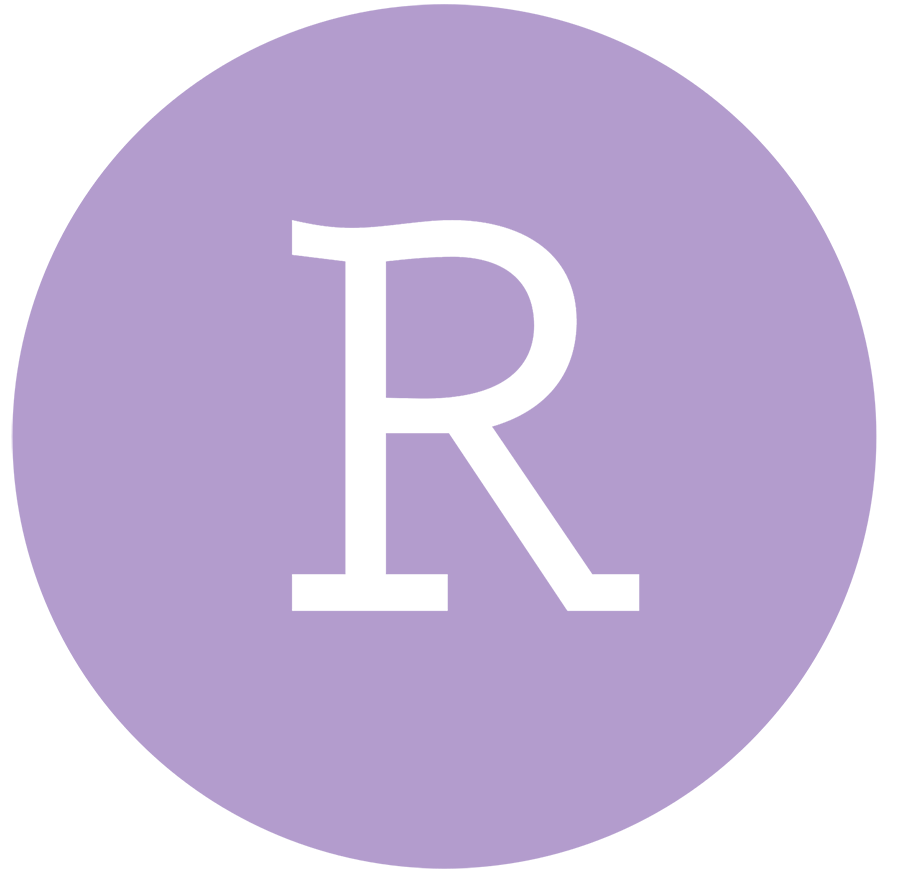
- Entorno de desarrollo integrado (IDE) enfocado en R
- Lanzado en 2011
- Interfaz gráfica (ventanas y botones)
- Desarrollado por Posit (ex RStudio)
- Software libre
Conceptos clave
Script
Archivo de texto .R en el que escribimos nuestro código, en pasos, y siguiendo un orden lógico.
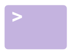
Consola
Es la forma directa de interactuar con R, un comando a la vez, con resultados efímeros.
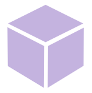
Proyecto
Archivo .Rproj que marca nuestro espacio de trabajo: una carpeta específica que reúne todas las piezas de nuestro análisis.
RStudio
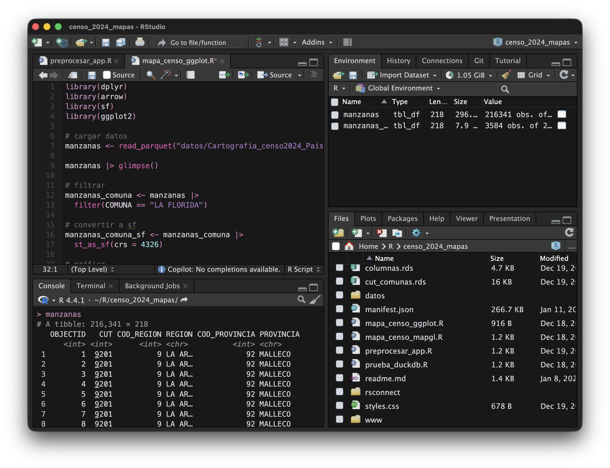
1 Scripts
2 Consola
3 Entorno
4 Archivos
Conceptos
1 Panel de scripts: los archivos de texto con nuestro código. Podemos tener varias pestañas. Ejecutamos el código poniendo el cursor en la línea y presionando control + enter, o el botón Run.
2 Panel de consola: en la consola se imprimen los resultados del código que ejecutamos. También podemos ejecutar código directamente en ella escribiendo y presionando enter.
3 Panel de entorno: acá veremos los objetos que vayamos creando o cargando, que pueden ser números, texto, tablas de datos, funciones, gráficos y otros.
4 Panel de archivos: en este panel podemos navegar los archivos y carpetas de nuestro proyecto y/o computador. La idea es que todo esté dentro del proyecto!
Consola y scripts
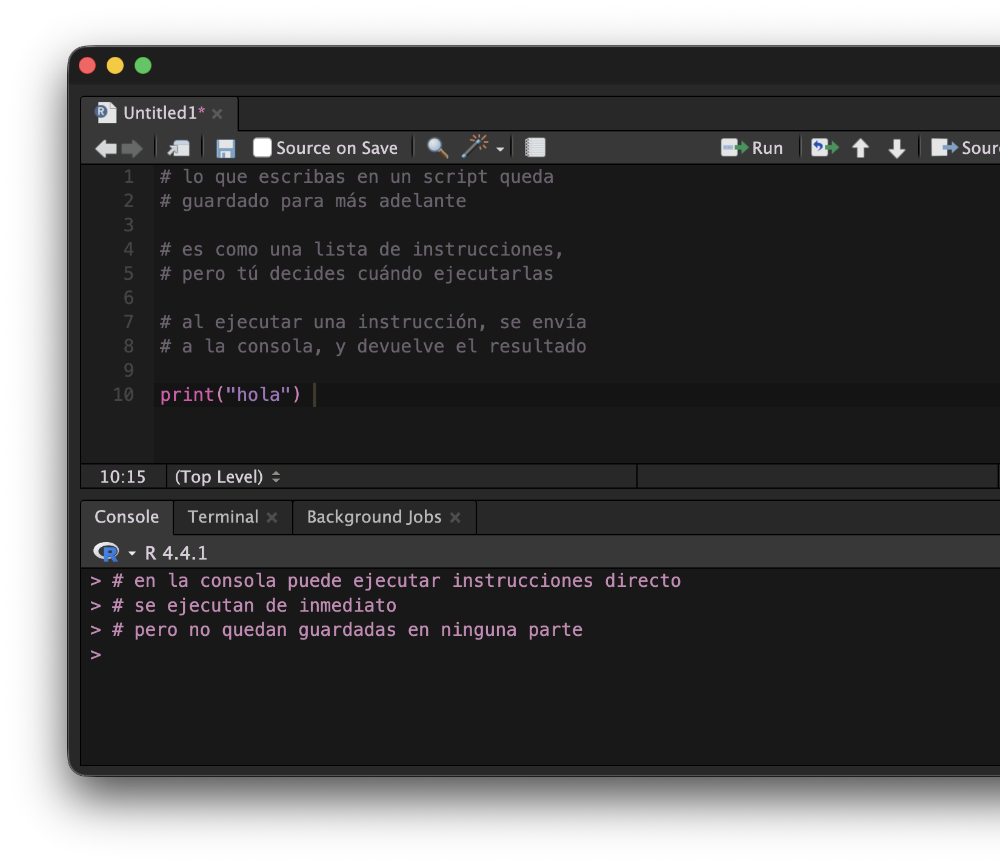
- Todos los comandos se ejecutan por medio de la consola
- Pero al ejecutar código en la consola, el código no se guarda!
- Para guardar el código, escribimos en scripts
- Escribimos las instrucciones en un script, y RStudio se encarga de pasarlos a la consola y ejecutarlos cuando se lo pidamos 💡
Botones
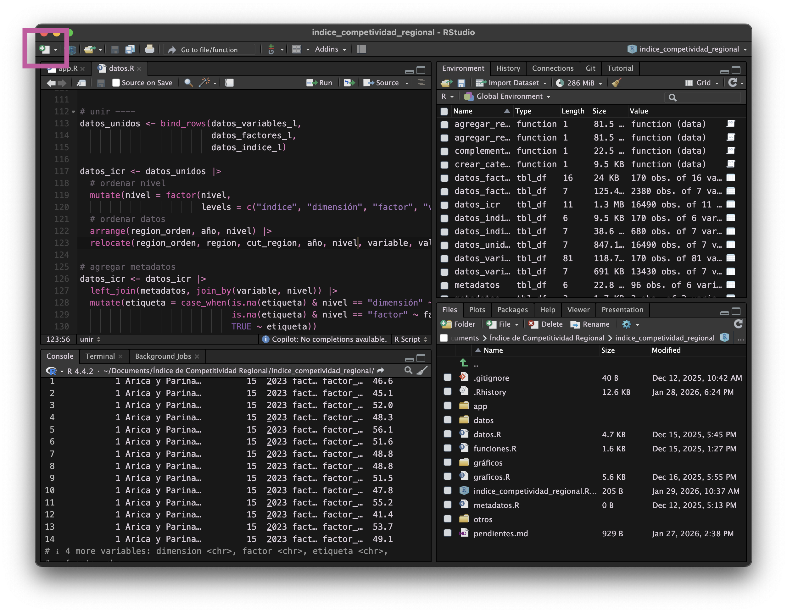
Crear un nuevo script de R
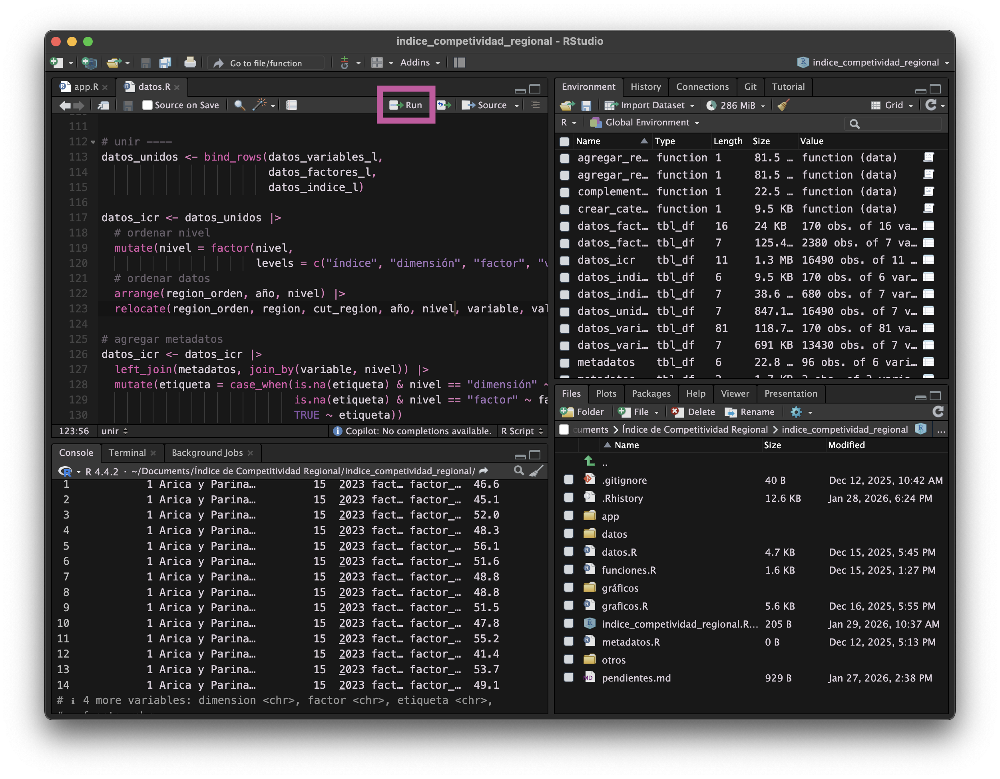
Botón para ejecutar código
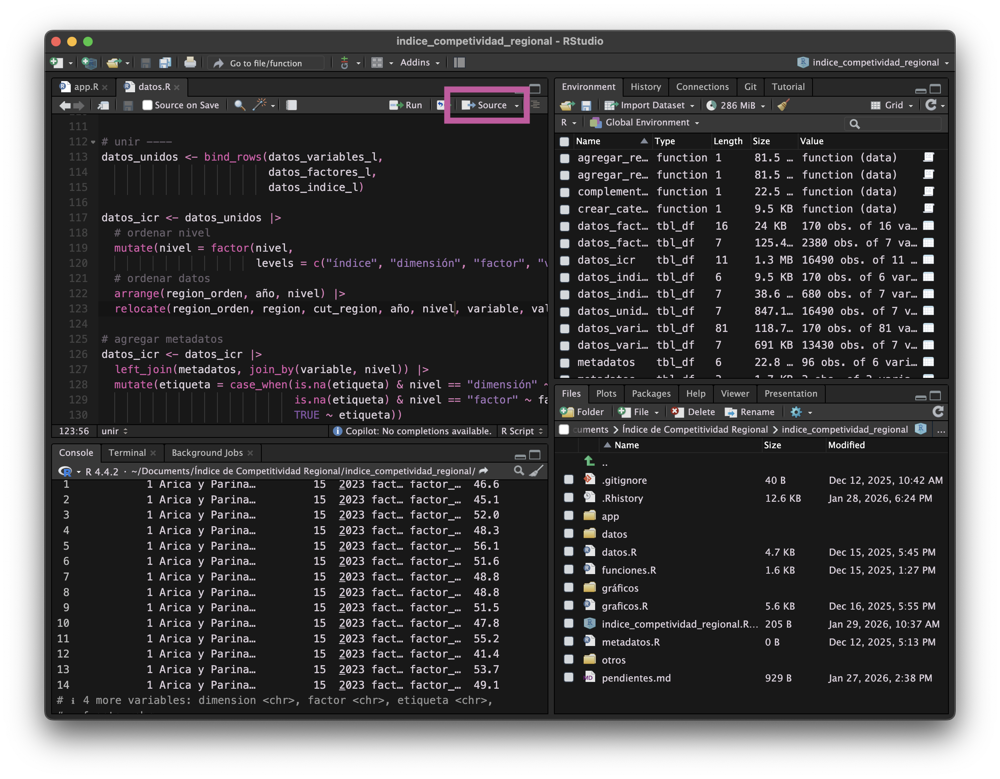
Botón para ejecutar todo el script
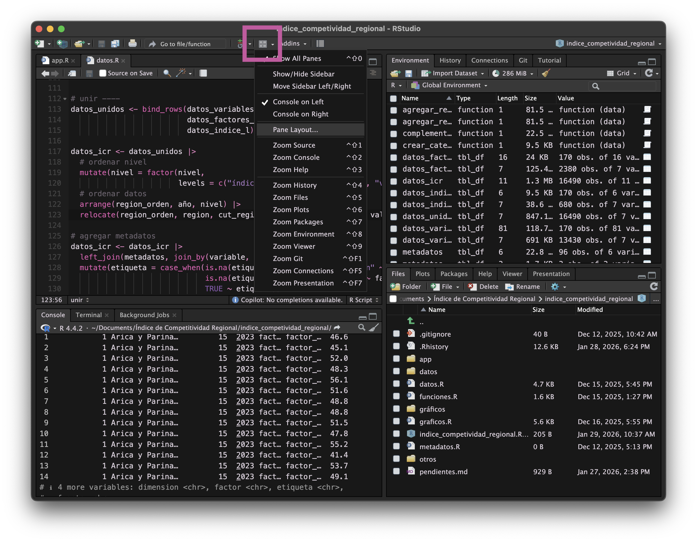
Configurar paneles de RStudio
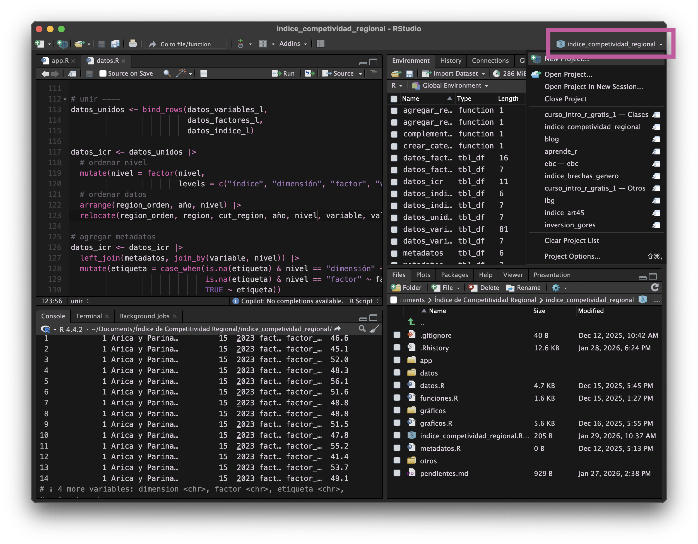
Cambiar de proyecto o crear uno nuevo
Operaciones básicas
- Podemos realizar cualquier operación matemática en R.
- Para ejecutar un comando, pon el cursor de texto en la línea o expresión que desees ejecutar, o selecciónala, y presiona el botón Run, o las teclas
control + enter. - Lo importante es que el cursor de texto
|esté en cualquier lugar de la línea. - El resultado de todas las operaciones aparece en la consola.
Comentarios
- Los comentarios nos permiten poner texto en cualquier parte del script sin que afecte los cálculos.
- También podemos poner un comentario al final de una línea sin que afecte el código
Tipos de datos
Lo que podemos hacer siempre va a depender del tipo de cada objeto.
En R existen varios tipos:
Objetos
Se le llama objeto a cualquier dato, variable, o elemento que tengas en R.
Podemos guardar todo como un objeto.
Para crear un objeto, simplemente le damos un nombre y le asignamos un contenido.
nombre ← contenido
Asignación
Con el operador de asignación creamos objetos nuevos.
->
Se escribe con:
Windows:

Mac:
Al asignar algo, creamos o modificamos un objeto con el valor que le estamos asignando.
Al ejecutar un objeto, obtenemos su valor.
Podemos usar el objeto creado para lo que queramos.
Crear objetos es como asignar variables, y podemos usar estas variables para llevar a cabo operaciones!
Comparaciones
Podemos usar cifras u objetos para compararlas entre sí: la respuesta será TRUE (verdadero) o FALSE (falso).
Las comparaciones son el principio que luego nos permitirá filtrar datos, crear variables, y más!
Vectores
Los vectores son secuencias de elementos. Un objeto que contiene cero o más datos.
- Estos elementos son de un mismo tipo: numérico, carácter o lógico.
- Son la forma más básica de registrar e interactuar con varios datos a la vez.
También podemos realizar comparaciones sobre los valores de un vector:
O cualquier operación sobre sus elementos:
Funciones
- Las funciones son pequeños programas que permiten realizar distintas operaciones.
función(argumento = 123)
Funciones en vectores
Las funciones también pueden operar sobre vectores de datos.
Es decir que la operación que hace la función se aplica a cada elemento del vector.
Pensemos las funciones como nuestras acciones, y los vectores como las columnas o variables de nuestras bases de datos.
Datos
Para cargar datos, tenemos que:
- Tener un archivo y conocer su formato (Excel, Stata, CSV, etc.)
- Saber dónde está el archivo en nuestro computador
- Guardar el archivo dentro del proyecto de R 📂
- Conocer una función que lea ese formato de archivos
Cargar datos
- Las funciones de carga de datos usan como argumento la ruta del archivo.
Probemos cargando unos datos!
Paquetes
Paquetes para carga de datos
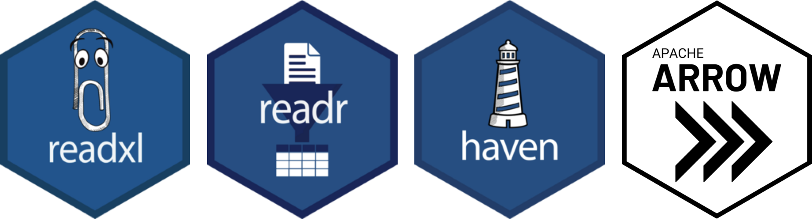
{readxl}es uno de los paquetes de lectura de planillas Excel. Para escribir un archivo Excel está{writexl}{readr}lee y escribe datos de múltiples formatos (csv, rds, rdata), usualmente de forma más veloz y cómoda{haven}permite cargar archivos SPSS, Stata, y SAS{arrow}es un formato moderno de datos columnares, optimizado para grandes volúmenes y velocidad de carga, y pensado para usarse en distintos softwares
{dplyr}
- Paquete de exploración, manipulación y transformación de datos
- Sus funciones se escriben como verbos
- Las acciones se encadenan con el operador de conexión o pipe:
|>

Funciones comunes
head(),tail(),glimpse(): vistazos a los datosselect(): seleccionar columnas o variables de una tablaslice(): extraer filas de una tabla por su posición o distintos criteriospull(): extraer una columna como vectorfilter(): filtrar observaciones en base a condiciones personalizadasdistinct(): filtrar observaciones repetidas en una o más columnascount(): conteo de casos únicos en una o más columnasmutate(): crear columnas entregando valores, funciones sobre columnas, o calculando a partir de otras columnas
Tutoriales de {dplyr}
Para que puedan repasar o guiarse con casos básicos de uso de {dplyr} con datos reales, dejo un par de tutoriales:
Conector
El conector o pipe |> (o también %>%) nos permite encadenar varias funciones de forma más legible.
|> %>%
Se escribe con:
Windows:
Mac:
Usando el conector
Luego podemos encadenar varias funciones:
Seleccionar y ordenar
Cargamos un conjunto de datos de prueba:
Estos datos son del Ministerio Desarrollo Social y Familia de Chile.
Seleccionar
Ordenar
# A tibble: 6 × 3
region comuna personas
<chr> <chr> <dbl>
1 Metropolitana Puente Alto 125235.
2 Metropolitana Santiago 87355.
3 Metropolitana Maipú 86976.
4 Antofagasta Antofagasta 73103.
5 Metropolitana San Bernardo 64276.
6 Valparaíso Valparaíso 60901.Filtrar datos
- Para filtrar, realizamos una comparación entre los valores de una columna y un valor específico.
# A tibble: 6 × 10
codigo region comuna personas_proy personas porcentaje limite_inferior
<dbl> <chr> <chr> <dbl> <dbl> <dbl> <dbl>
1 15202 Arica y Parin… Gener… 668 392. 0.586 0.435
2 9116 La Araucanía Saave… 12717 5654. 0.445 0.361
3 9204 La Araucanía Ercil… 8422 3503. 0.416 0.361
4 9106 La Araucanía Galva… 12594 5029. 0.399 0.313
5 8314 Biobío Alto … 6784 2640. 0.389 0.319
6 10306 Los Lagos San J… 7521 2923. 0.389 0.314
# ℹ 3 more variables: limite_superior <dbl>, casen <chr>, tipo_estimacion <chr>Crear/modificar variables
Con mutate() para crear una nueva variable o columna
Le aplicamos mutate() a un data frame conectando los datos a la función con un conector (|> o %>%)
Variables condicionales
ifelse()
Si ocurre esto, entonces retorno lo primero, y si no, lo segundo.
# A tibble: 6 × 3
comuna porcentaje nivel
<chr> <dbl> <chr>
1 Iquique 0.183 baja
2 Alto Hospicio 0.326 alta
3 Pozo Almonte 0.250 baja
4 Camiña 0.223 baja
5 Colchane 0.300 alta
6 Huara 0.386 alta case_when()
Recodificación avanzada con múltiples condicionales.
# A tibble: 6 × 3
comuna porcentaje miles
<chr> <dbl> <chr>
1 Iquique 0.183 baja
2 Alto Hospicio 0.326 alta
3 Pozo Almonte 0.250 media
4 Camiña 0.223 media
5 Colchane 0.300 alta
6 Huara 0.386 alta Resúmenes de datos
Aplicar una función para resumir todas las filas de una tabla en un sólo resultado:
Datos de texto
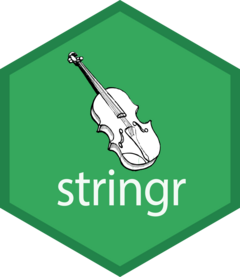
El paquete {stringr} se especializa en texto.
Trabajando con datos de texto
- Podemos usar un conteo de palabras generado con
count()para hacer una nube de palabras. - Pero antes, tenemos que tokenizar el texto para convertirlo desde una cadena de texto a palabras independientes.
noticias <- readr::read_csv2("https://raw.githubusercontent.com/bastianolea/prensa_chile/refs/heads/main/prensa_datos_muestra.csv")
library(tidytext)
palabras <- noticias |>
tidytext::unnest_tokens(input = cuerpo, output = palabra) |> # tokenizar documentos
filter(!palabra %in% stopwords::stopwords("spanish")) # eliminar palabras vacías
palabras_conteo <- palabras_conteo |>
slice_max(n, n = 1000) # sólo las más frecuentes
library(wordcloud2)
palabras_conteo |>
wordcloud2::wordcloud2(backgroundColor = "#23102A", color = "#9F69C7")Análisis de sentimiento
Podemos usar un modelo de lenguaje (LLM) local o remoto para que R analice los textos y retorne si son positivos, neutros o negativos.
library(ellmer)
chat <- chat_ollama(model = "llama3.2:3b") # elegir modelo
library(mall)
llm_use(chat) # configurar modelo
sentimiento <- noticias |>
slice_sample(n = 10) |>
# extraer sentimiento
llm_sentiment(cuerpo, pred_name = "sentimiento",
options = c("positivo", "neutro", "negativo"))
sentimientoCruzar datos
Para cruzar dos tablas de datos
usamos left_join() de {dplyr}
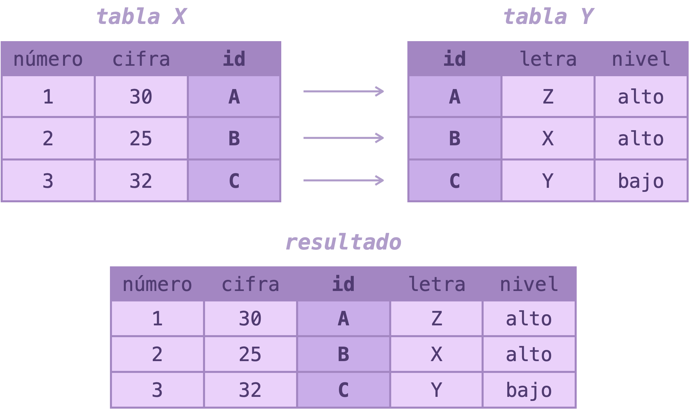
Cruzando datos
Veamos un ejemplo donde cruzamos dos tablas, la de pobreza y una nueva de clasificación comunal (urbana, mixta, rural según la PNDR), a partir de la columna que tienen en común: codigo
# A tibble: 6 × 5
codigo comuna personas porcentaje clasificacion
<dbl> <chr> <dbl> <dbl> <chr>
1 1101 Iquique 41967. 0.183 Urbana
2 1107 Alto Hospicio 45162. 0.326 Urbana
3 1401 Pozo Almonte 4563. 0.250 Rural
4 1402 Camiña 308. 0.223 Rural
5 1403 Colchane 473. 0.300 Rural
6 1404 Huara 1185. 0.386 Rural Transformar datos
- El paquete
{tidyr}se especializa en transformar la estructura de los datos. - Esto nos permite manipular los datos para que sea más cómodo o lógico realizar ciertas operaciones.
- Por ejemplo:
- Si necesitamos sumar varias variables, es más cómodo tenerlas en filas (para poder usar algo como
sum(valores)) que en columnas (y tener que sumara+b+c+d…) - Si queremos comparar varias variables, o mostrarlas a un público, es mejor que estén lado a lado, como en las tablas comunes.
- Si necesitamos sumar varias variables, es más cómodo tenerlas en filas (para poder usar algo como
- Por ejemplo:
Transformando datos

- Pivotar una tabla sirve para cambiar su forma:
- De variables en columnas a filas:
pivot_longer() - De variables en filas a columnas:
pivot_wider()
- De variables en columnas a filas:
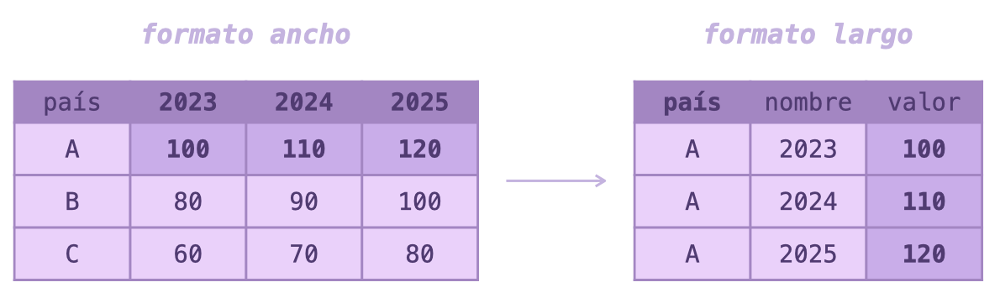
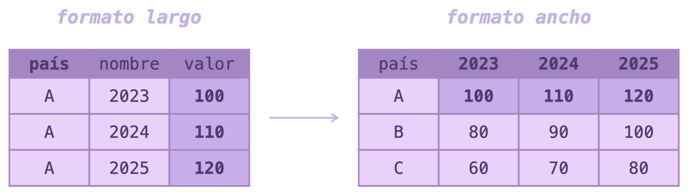
Datos para practicar
Puedes encontrar más datos en mi repositorio de datos sociales, en el banco integrado de datos del Ministerio de Desarrollo, en los datos abiertos del Estado Chile, y muchos más.
Consejos
- Mantengan su propio libro de aprendizajes
- Leer bien los errores
- Probar paso a paso
- Devolverse y empezar de nuevo
- No se vuelvan dependientes de la IA
- Asistencia con IA: autocompletado de GitHub Copilot
- Mensaje de sistema para su proveedor de IA
- Aprender a googlear bien
Gracias ♥
Puedes escribirme cualquier duda o comentario por aquí